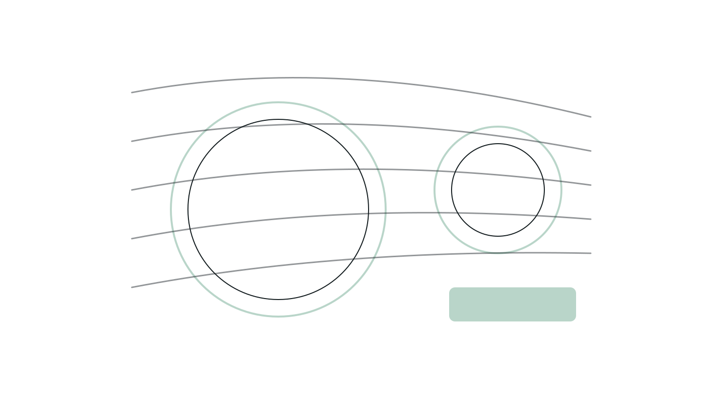
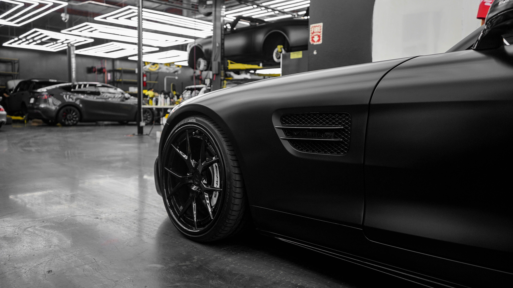
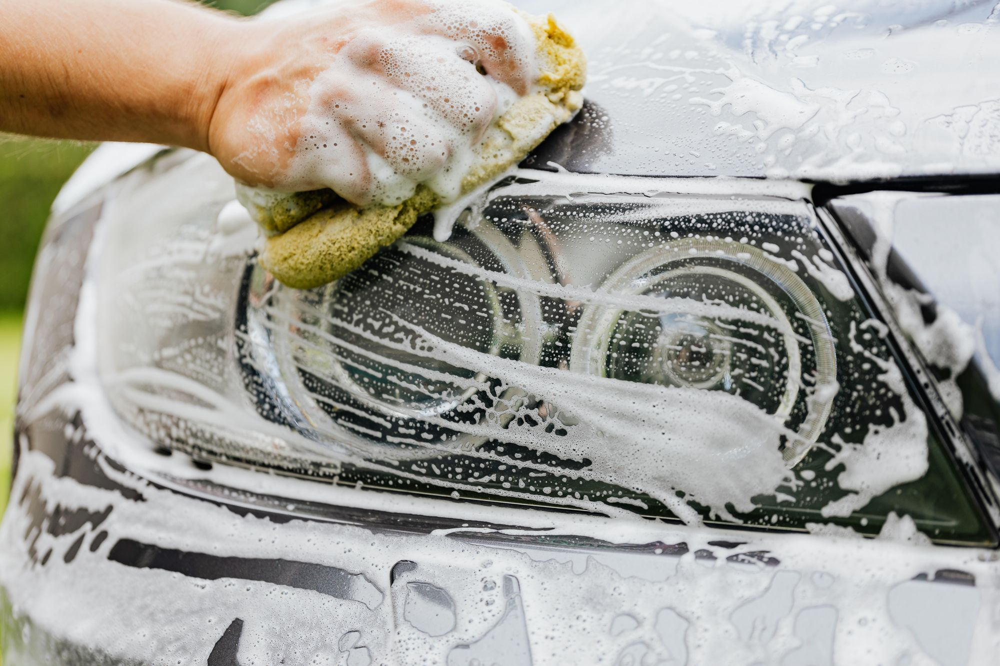
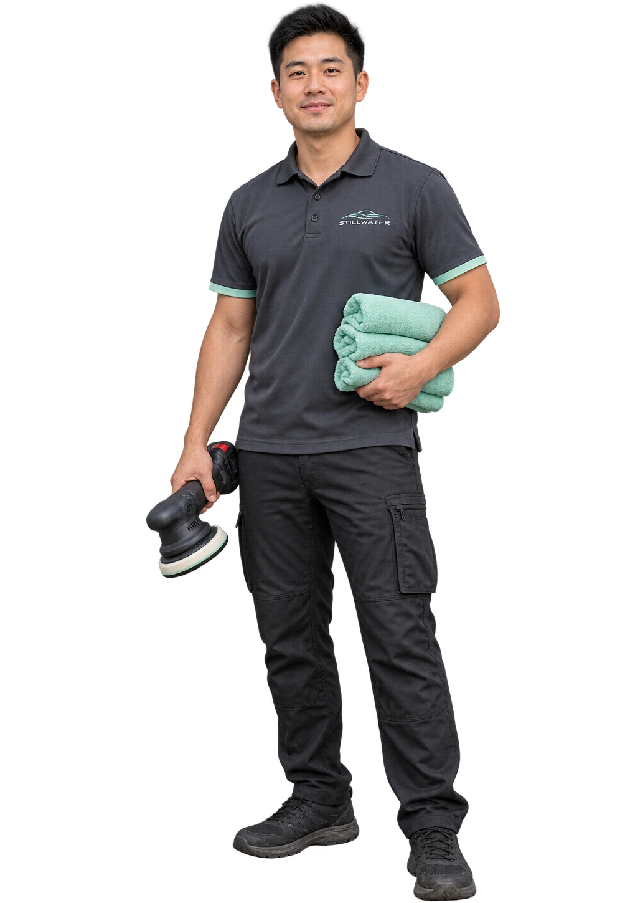
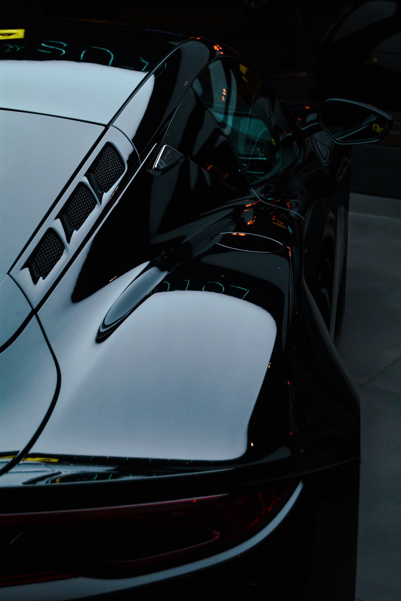
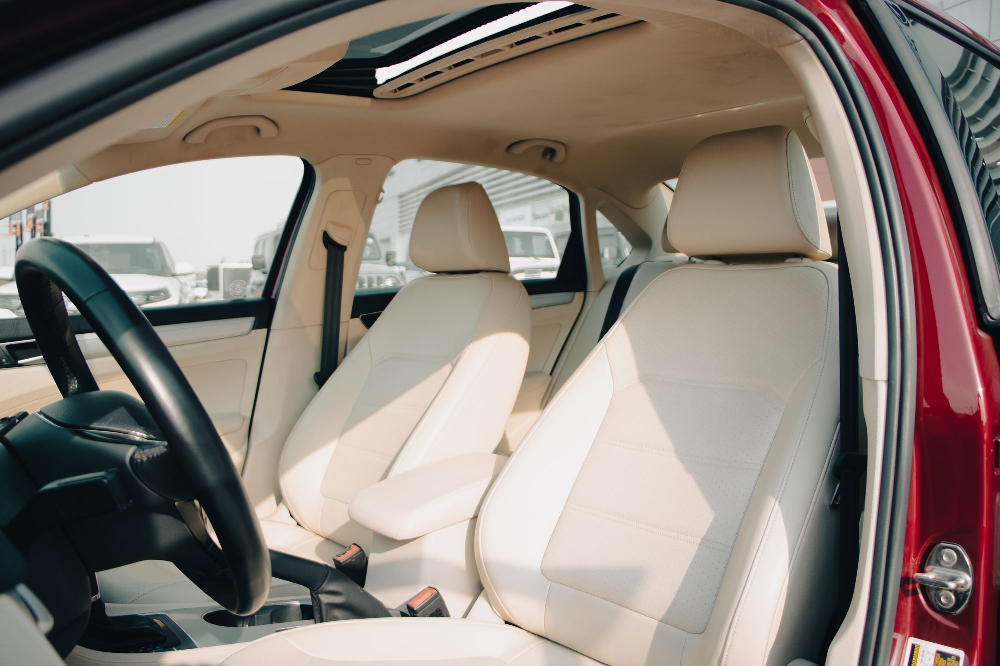
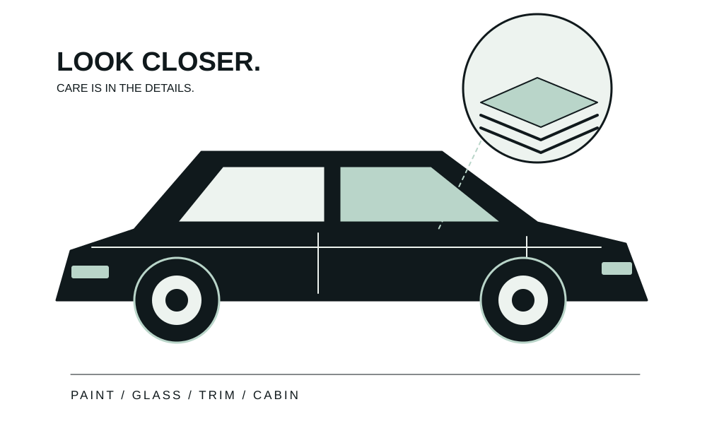
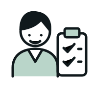
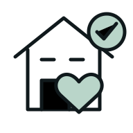

Exterior detailing
A considered wash and finish for the surfaces outside.

A considered detail for the car you drive every day. Every surface gets its moment.
Find your detail ↗

A considered wash and finish for the surfaces outside.
Give the seats, surfaces, and everyday touchpoints some attention.
Bring the interior and exterior together in one appointment.
Discuss suitable next steps for maintaining the finish.
The right detail starts with the car you drive and the finish you want to look after. Interior, exterior, and maintenance preferences all shape the conversation.
Seats, surfaces, storage areas, and the touchpoints you use every day can be discussed as part of the interior scope.
Talk about the current finish, visible concerns, and the work you want included.
Discuss the way the vehicle is used and what you want to maintain between appointments.

We talk through the vehicle’s condition, how you use it, and the finish you want. Then we agree on a detail that makes sense for your car.



Tell us the vehicle, condition, and result you want.

Discuss materials, expectations, and the scope.

Confirm the address, access, and appointment.
When you get in touch, a little context goes a long way. These are the details that help us start a useful conversation about your auto detailing project.
Tell us what you have in mind ↗Tell us about your vehicle so the conversation starts with your situation.
A few details about interior priorities help us understand what you need.
Share exterior condition when you get in touch, including photos where useful.
Let us know about access and appointment plans so the proposed scope reflects your priorities.
We’ll confirm access, workspace, and any water or power requirements before the appointment.
Results depend on material, condition, and damage. We’ll discuss realistic expectations before starting.
Tell us about the vehicles and their condition so we can plan the scope and timing.